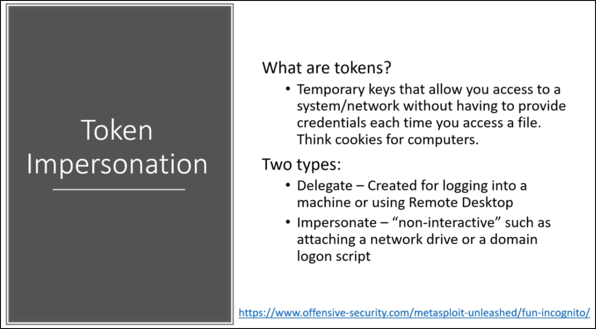

Delegate Token: E.G. when you log in into a Remote Desktop

Example of Impersonation:
1) Get The Delegation Tokens

2) Use that token!!

3) Try to take the hashes
In this case, we had no luck

What if there is an Admin token?


This time, we impersonate an admin:

Now, we can try to get the hashes:

Got it!!!: